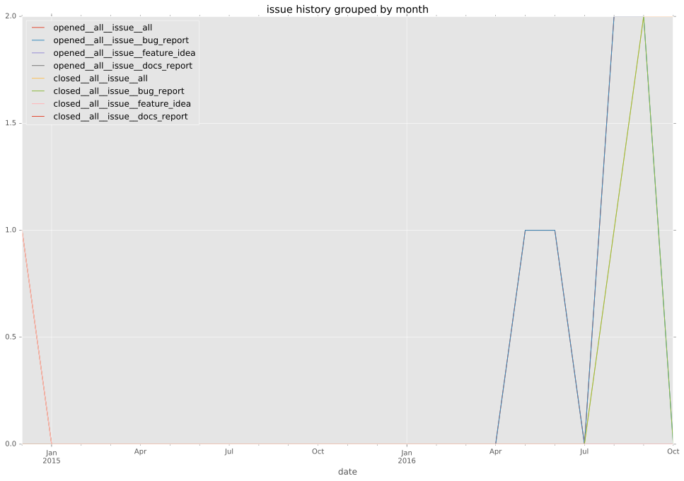
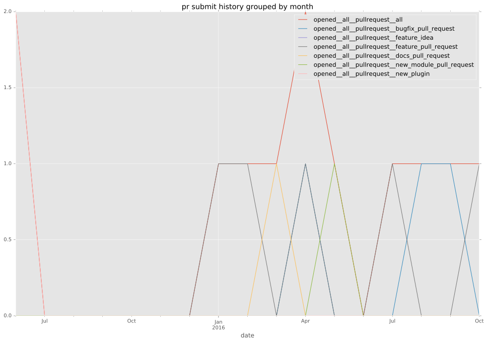

total issue counts
feature pull request: 2
docs report: 2
pullrequest: 7
docs pull request: 2
bugfix pull request: 3
feature idea: 2
issue: 9
bug report: 5
issue history

pullrequest history


days open by issue type
bugfix pull request
count: 6
std: 0.516397779494
min: 0
max: 1
median: 0.0
mean: 0.333333333333
all
count: 17
std: 15.751750603
min: 0
max: 49
median: 1.0
mean: 9.35294117647
pullrequest
count: 0
std: nan
min: nan
max: nan
median: nan
mean: nan
docs pull request
count: 3
std: 20.7846096908
min: 0
max: 36
median: 36.0
mean: 24.0
docs report
count: 1
std: nan
min: 2
max: 2
median: 2.0
mean: 2.0
feature pull request
count: 4
std: 7.50555349947
min: 2
max: 15
median: 8.5
mean: 8.5
feature idea
count: 1
std: nan
min: 49
max: 49
median: 49.0
mean: 49.0
issue
count: 0
std: nan
min: nan
max: nan
median: nan
mean: nan
bug report
count: 2
std: 0.0
min: 0
max: 0
median: 0.0
mean: 0.0
closures grouped by total days open